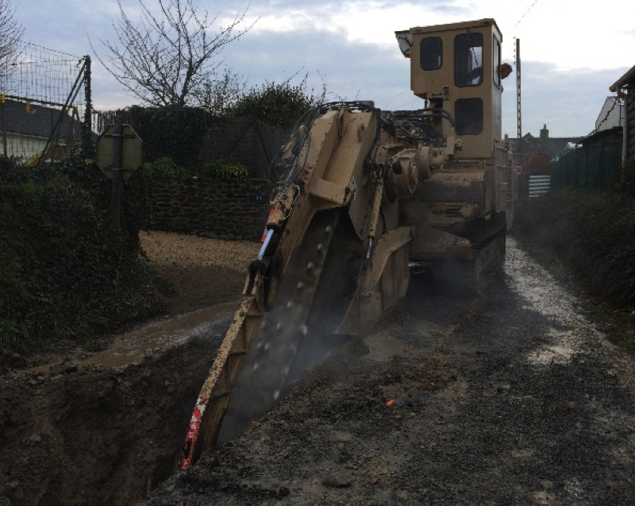

Extension du réseau d’assainissement des eaux usées et renouvellement de canalisation eau potable
Commune de Saint Pierre de Plesguen, extension eaux usées et renouvellement de la conduite d’eau potable
Résumé du chantier
- Maitre d'ouvrage
- Groupement de commande commune de Saint Pierre de Plesguen pour le réseau eaux usées et le syndicat intercommunal d’eau potable de la région de Tinténiac pour le réseau eau potable
- Débuté
- Novembre 2016
- Réception
- Décembre 2016
- Montant HT des travaux
- 201 000 €
- Localisation
- Commune de Saint Pierre de Plesguen lieu-dit La Roche Blanche
- Nature du réseau à réaliser
- Assainissement eaux usées et alimentation en eau potable
- Maitrise d'oeuvre
- Groupement Safege agence de Saint Grégoire (35) pour le réseau d’assainissement et 2LM à Basse Goulaine (44) pour l’eau potable
- Spécificité du projet
- Travaux que nous avons réalisés en pleine roche. Utilisation d’une trancheuse à chaine spécifique terrassement en terrain rocheux
Fourniture et pose de canalisation d’assainissement en polypropylène « POLOPLAST ECO PLUS PREMIUM 10 » Ø 200 mm sur 620 ml avec la création de 35 branchements
Fourniture et pose de canalisation d’eau potable Ø 75 mm PVC pression et la reprise de 35 branchements jusqu’aux compteurs.